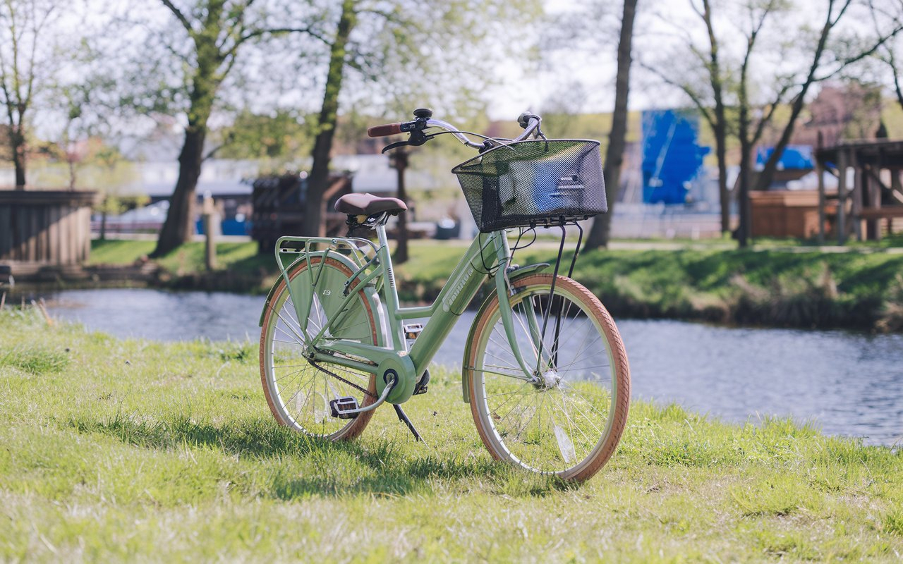
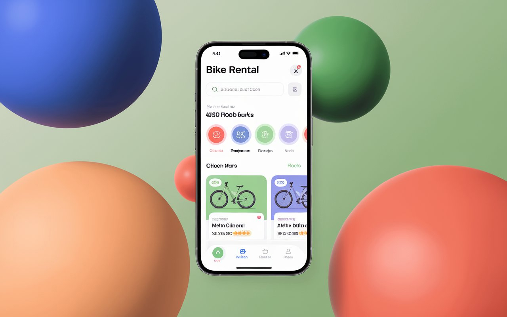
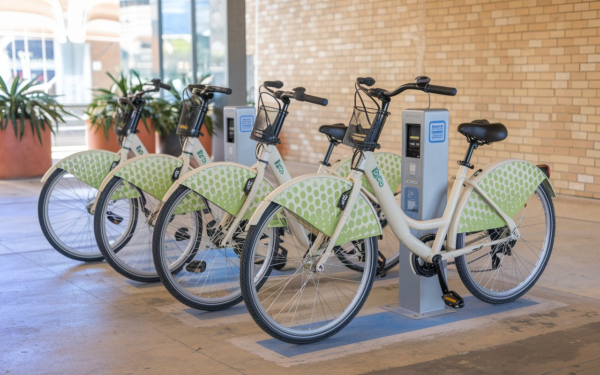

-
- 누구나 쉽고 편리하게 이용할 수 있는 저탄소 이동수단 서울 자전거
- 친환경적인 이동 수단을 통해 건강한 라이프스타일을 지원하며, 대중교과의 연계를 통해 더 나은 도시 생활을 만들어갑니다.
- 따릉이와 함께 건강하고 즐거운 이동을 경험하세요!
 -
- 서울 구석구석 따릉이앱으로 쉽고 편리하게
- 따릉이는 서울시민과 함께하는 공유자전거로 대여소가 설치된 곳이면 어디에서나 따릉이를 대여하고 반납할 수 있습니다.
- 따릉이 어플을 통해 현재 위치에서 가까운 대여소를 찾아 따릉이를 이용하세요.
 -
- 새로운 새싹 따릉이로 누구나 편리하게 이용해요
- 새싹 따릉이는 청소년과 어르신 등 체구가 작은 사람들을 위해 특별히 설계된 자전거 공유 모델입니다.
- 크기와 무게가 줄어들어 안전하고 편안한 주행을 제공하며, 모든 연령대가 쉽게 이용할 수 있는 새싹 따릉이를 만나보세요!
 -
- QR로 더 간편한 이용
- 새롭게 도입된 QR 기능으로 따릉이를 더욱 편리하게 이용해보세요! 이제 자전거 대여와 반납이 QR코드 스캔으로 간편하게 이루어집니다.
- 따릉이는 일반 단말기와 QR단말기의 사용법과 대여 및 반납 방법이 매우 다르니 서시공TV에서 따릉이의 사용법을 확인 하세요!
- 대여소 찾기
-
앱 기능에 대여소 지점 찾기를 활용해서
위치를 찾아보세요
- 스캔하기
-
앱에서 이용권 결제 후 대여하기를 눌러
자전거 안장 및에 있는 QR 코드를
스캔해주세요.
- 반납하기
-
안내 간판이 있는 대여소에
자전거를 반납 해주신뒤
반납 안내 문자를 꼭 확인 해주세요
여러분의 안전을 위해 이 수칙은 꼭 지켜 주세요!

- 출발전 점검
- 이용전 브레이크, 타이어, 체인,
안장 조임을 꼭 확인하세요.
따릉이는 어디에나 있어요!
대여, 반납 방법을 알고 싶다면 버튼을 눌러서
더 유용하게 따릉이를 이용하는 방법을
알아보세요!
- 대여 영상 방법
- 반납 영상 방법